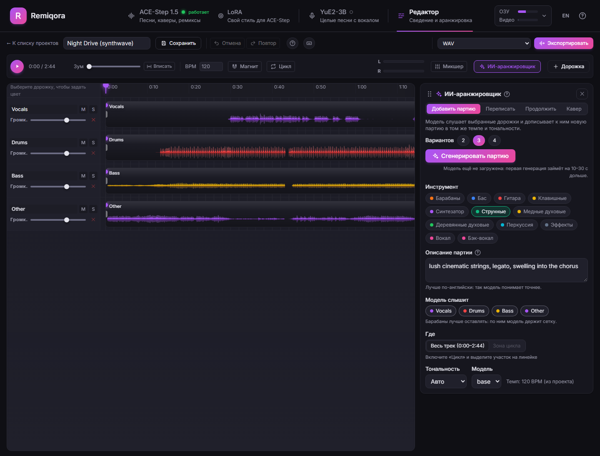
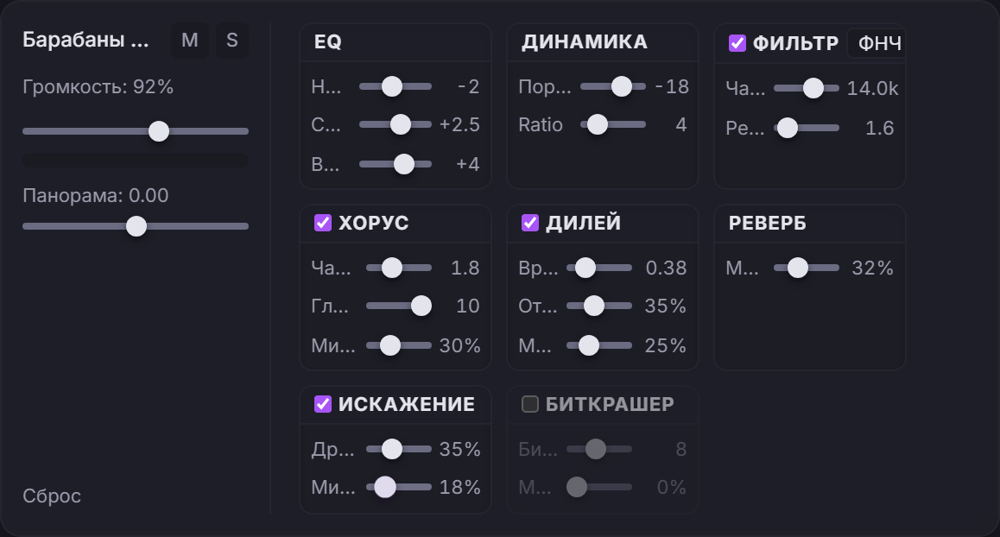
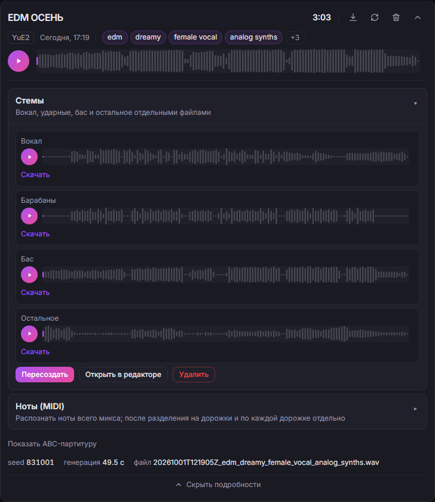
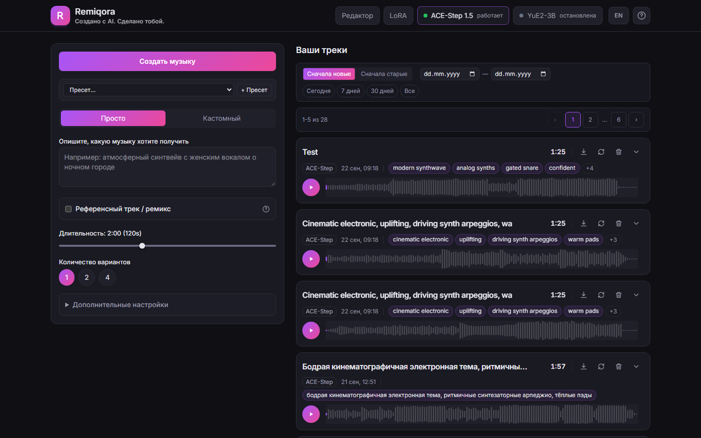
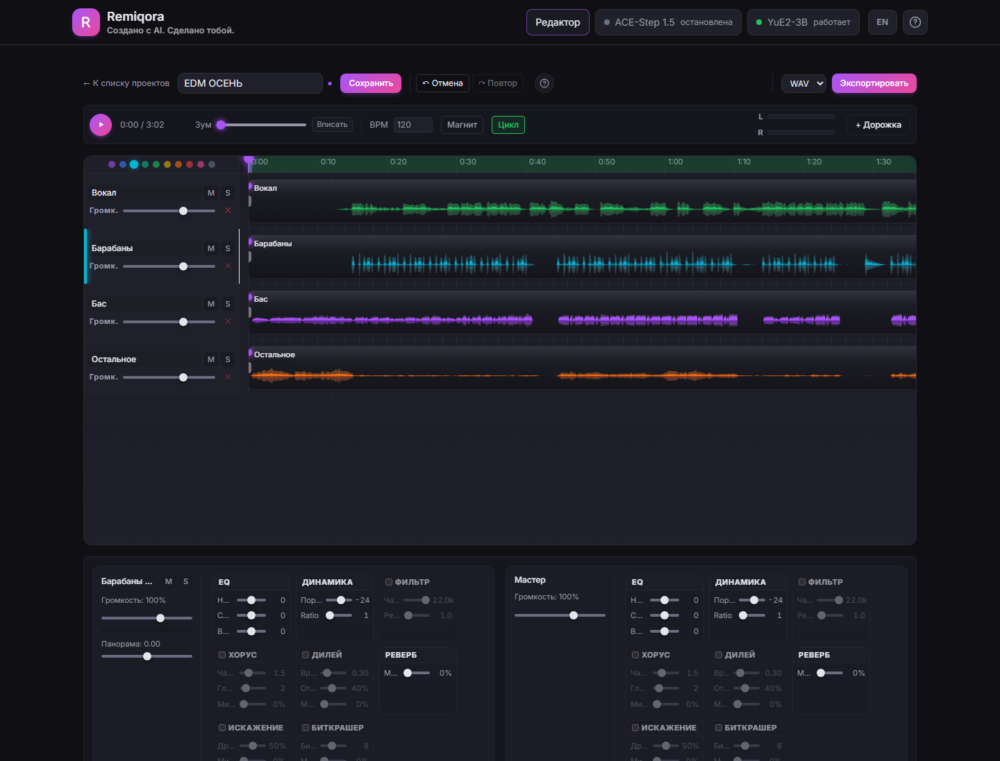
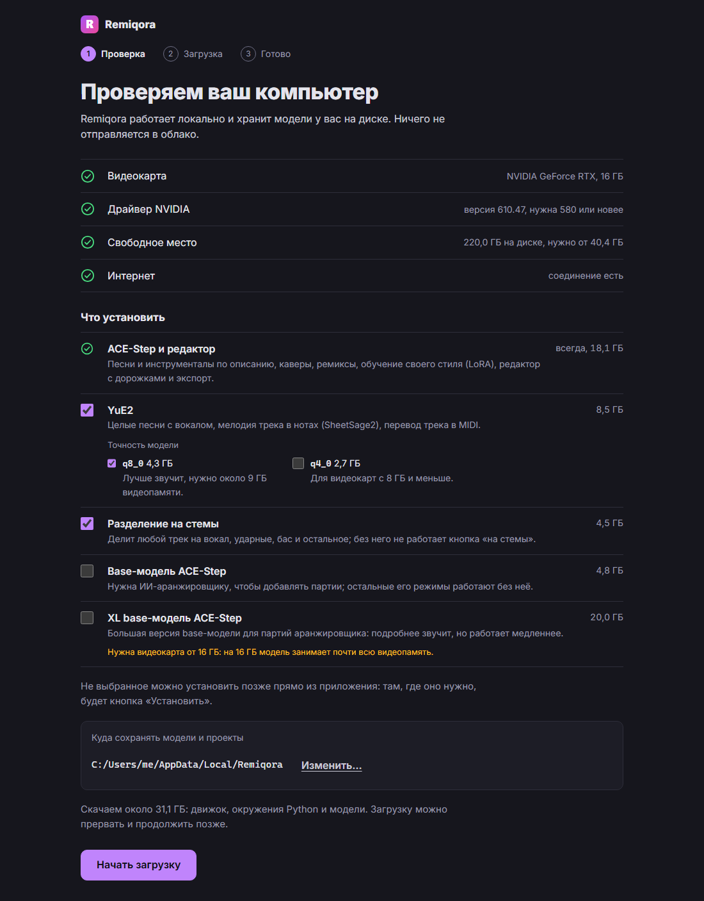

- Открытый код · Работает локально
- Новое: ИИ-аранжировщик
- Windows · NVIDIA CUDA
- macOS · Apple Silicon
Remiqora. Создано с AI.
Сделано тобой.
Remiqora — локальная музыкальная студия. ACE-Step 1.5 и YuE2-3B генерируют трек, Demucs делит его на стемы, ИИ-аранжировщик дописывает подходящие партии, а многодорожечный редактор в браузере сводит результат. Всё работает на вашем компьютере.
Открыть на GitHubСмотреть демо
- Генерация
- Стемы
- Аранжировка
- Сведение



Послушайте, как собирается песня
Всё здесь сделано в Remiqora для этой страницы. ACE-Step 1.5 написал песню по одному запросу, Demucs разделил её на четыре стема, а ИИ-аранжировщик дописал поверх три варианта струнных. Включите воспроизведение, заглушите или выделите стемы и включите струнные прямо на ходу.
- Песня
energetic pop rock, powerful female vocal, punchy live drums, driving bass, crunchy electric guitars, anthemic chorus, 128 bpm, no strings
ACE-Step 1.5 turbo сделал три варианта по 1:40 примерно за 15 секунд, когда модель уже загружена. Здесь звучит один из них, без обработки.
- Струнные
driving staccato string section, rhythmic violins and cellos, energetic, building into the chorus
ИИ-аранжировщик слышал весь микс и написал три варианта примерно за 40 секунд на base-модели. Они звучат на 6 дБ тише, как если бы вы опустили фейдер.
Время указано для RTX 4080 с 16 ГБ. Текст песни написан для этого демо; на английской странице своя песня по тому же запросу.
Четыре запроса, четыре трека
Первый вариант по каждому запросу, как его выдал ACE-Step 1.5 turbo: без правок и сведения. Каждый запуск давал два варианта по минуте примерно за 10 секунд на RTX 4080. Здесь по 30 секунд из каждого.
deep house, rolling bassline, warm analog pads, crisp hi-hats, four on the floor, 122 bpm
Инструментал, 0:30
lo-fi hip hop, dusty boom bap drums, mellow Rhodes chords, vinyl crackle, upright bass, 80 bpm
Инструментал, 0:30
cinematic orchestral, soaring strings, french horns, taiko and timpani, epic build
Инструментал, 0:30
russian indie rock, male vocal, jangly electric guitars, driving drums, bass, energetic
С текстом на русском, 0:30
От запроса до сведения
Генерация
Опишите музыку или задайте стиль и текст. ACE-Step 1.5 и YuE2-3B работают в одном интерфейсе: выберите модель в шапке, и Remiqora запустит её, а вторую остановит, поэтому хватит одной видеокарты.

Форма генерации и библиотека треков Разделение на стемы
Одна кнопка разделяет любой трек на вокал, барабаны, бас и остальное с помощью Demucs. «Открыть в редакторе» отправляет все четыре стема в новый проект.
Четыре стема, у каждого свой плеер и скачивание Новые партии от ИИ-аранжировщика
Выберите инструмент и дорожки, которые должна слышать модель: она напишет барабаны, бас, струнные или вокал в их темпе и тональности. Ещё он перерисовывает участок, продолжает трек и делает кавер в другом стиле. Каждый запуск даёт 2–4 варианта на отдельных дорожках, остаётся лучший.
ИИ-аранжировщик рядом с проектом из четырёх стемов Сведение в редакторе
Обрезайте, разрезайте и делайте фейды, зацикливайте фрагмент, привязывайтесь к сетке BPM и подгоняйте клип под темп проекта без изменения тональности.

Таймлайн с четырьмя дорожками стемов, выбрана дорожка барабанов Экспорт
Отрендерите микс в WAV или MP3 прямо в браузере, и он сохранится в библиотеке, или выгрузите каждую дорожку с проектом Reaper или файлом DAWproject, чтобы закончить в своей DAW.
Полноценный рэк эффектов на каждом канале
На каждой дорожке и на мастер-шине стоят одни и те же восемь эффектов, все работают в реальном времени: эквалайзер, компрессор, фильтр, хорус, дилей, реверб, искажение и биткрашер.
Что ещё есть
- Обучение LoRA для ACE-Step прямо в интерфейсе
- Извлечение мелодии SheetSage2 и перевод аудио в MIDI через MuScriptor
- Отмена и повтор на 30 шагов и подробная справка по каждому разделу
- Интерфейс на русском и английском, по умолчанию на языке системы
Или настольное приложение
На Windows и на Mac с Apple Silicon Remiqora есть и в виде установщика. Он открывается в своём окне и при первом запуске сам всё настраивает: без Git, без Python, без компилятора.
Скачать для WindowsСкачать для macOS
Версия 0.3.0, предрелиз. Windows: видеокарта NVIDIA. macOS: Apple Silicon. См. все файлы и суммы SHA-256.
- Проверяет видеокарту, драйвер и место и спрашивает, что установить: ACE-Step всегда (около 18 ГБ), а YuE2, разделение на стемы и модели ИИ-аранжировщика по желанию, с размером каждого.
- Всё, что не поставили, видно как «не установлено» с кнопкой, которая докачает это позже, пока приложение работает.
- Закрытие окна останавливает серверы моделей и освобождает видеокарту.
- Модели, проекты и логи остаются в этой папке. Ничего никуда не отправляется.
Построено на Electron вокруг того же веб-интерфейса. Первый запуск использует uv для Python, готовый движок audio.cpp (CUDA или Metal) и FFmpeg.
Экспериментально. Установщики пока не подписаны: Windows покажет предупреждение SmartScreen, а macOS может попросить разрешить приложение. Хотите собрать сами? Шаги описаны в папке desktop.


Что стоит знать перед установкой
Работает сегодня
- Windows с видеокартой NVIDIA (CUDA). Проверено на RTX 4080 16 ГБ.
- macOS на Apple Silicon. Проверено на M5 с 24 ГБ; путь новее и медленнее, чем на Windows.
- Linux x86_64 с видеокартой NVIDIA — скриптами силами сообщества.
- Разделение на стемы, транскрипция в MIDI и редактор.
Ограничения
- Установщика для Linux пока нет — запуск из исходников через скрипты.
- По умолчанию ACE-Step и YuE2 работают по очереди.
- Качество звука определяют сами модели.
- Установщики настольного приложения экспериментальные и без подписи.
- Активная разработка: пока все релизы предварительные.
- Лицензии: Remiqora и ACE-Step 1.5 — MIT, а веса YuE2-3B распространяются под CC BY-NC 4.0, то есть без коммерческого использования.
Установка
Со скриптами нужен Git, остальное они поставят; все параметры и решения проблем описаны в README. Не хотите терминал? Возьмите настольное приложение выше.
Windows с видеокартой NVIDIA
git clone https://github.com/inikolax/remiqora.git
cd remiqora
setup_prereqs.bat
setup_models.bat
dev.batДрайвер NVIDIA поставьте сами: скрипт его не трогает. Модели скачиваются около 10 ГБ.
macOS с Apple Silicon
git clone https://github.com/inikolax/remiqora.git
cd remiqora
./setup_prereqs.sh
./setup_models.sh
./dev.shИспользуется готовая Metal-сборка YuE2, компилятор не нужен.
Linux x86_64 с видеокартой NVIDIA
git clone https://github.com/inikolax/remiqora.git
cd remiqora
./setup_linux.sh
./prod_run_linux.shСделано силами сообщества. Собирает audio.cpp из исходников, поэтому кроме драйвера нужен CUDA toolkit (nvcc, cuBLAS, cuFFT). Проверено на Ubuntu 24.04.